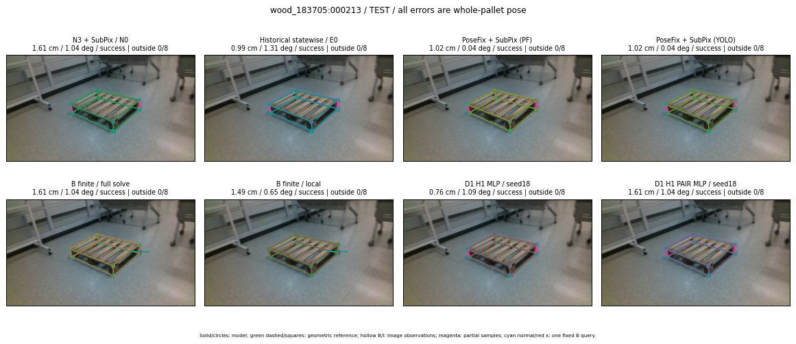

Whole-pallet pose errors; reference is a fixed geometric annotation, not certified physical GT.

Scores are uncalibrated logits. N0 retention is a numerical pose alias; it differs from H0 none or B fallback. B/I and profiles in baseline/B panels are original observations; L panels use new D1 observations. Only one deterministic supported B query is shown in a thumbnail; full support counts are below. Grey privacy rectangles edit the display copy only and are unrelated to O states; all observations were measured on original pixels. Thumbnails use JPEG quality85; detailed scientific panels are PNG.
| Method | Whole pose / cm, deg | Actual source | Selected ID | Score | Archived candidates | Eligible | N0 retained | H0 none | Fallback | Finite profiles |
|---|---|---|---|---|---|---|---|---|---|---|
| Raw YOLO + F | 1.05 cm / 1.75 deg / success | OTHER | None | N/A | N/A | N/A | False | N/A | None | N/A |
| N3 + SubPix / N0 | 1.61 cm / 1.04 deg / success | N0 | None | N/A | N/A | N/A | True | N/A | None | N/A |
| Historical statewise / E0 | 0.99 cm / 1.31 deg / success | E0_REGENERATED | None | N/A | N/A | N/A | False | N/A | False | N/A |
| PoseFix raw | 2.41 cm / 0.32 deg / success | OTHER | None | N/A | N/A | N/A | False | N/A | None | N/A |
| PoseFix + SubPix (PF) | 1.02 cm / 0.04 deg / success | OTHER | None | N/A | N/A | N/A | False | N/A | False | historical support records 9; finite audit N/A |
| PoseFix + SubPix (YOLO) | 1.02 cm / 0.04 deg / success | OTHER | None | N/A | N/A | N/A | False | N/A | False | historical support records 9; finite audit N/A |
| Historical L, seed18 | 0.76 cm / 1.09 deg / success | OTHER | G10/ORIGINAL_WD/sample/0 | N/A | 49 | 46 | False | False | False | N/A |
| Historical B fixed bank | 0.76 cm / 1.09 deg / success | OTHER | G10/ORIGINAL_WD/sample/0 | N/A | N/A | N/A | False | N/A | False | N/A |
| Historical B full | 0.72 cm / 0.93 deg / success | OTHER | NEW/B/ORIGINAL_WD/h0/G13/ORIGINAL_WD/sample/0/PROPOSED_NATIVE_YAW_0 | N/A | N/A | N/A | False | N/A | False | N/A |
| Historical edge full | 0.38 cm / 1.41 deg / success | OTHER | NEW/edge/ORIGINAL_WD/h0/G13/ORIGINAL_WD/sample/0/PROPOSED_NATIVE_YAW_0 | N/A | N/A | N/A | False | N/A | False | N/A |
| Historical AB full | 0.73 cm / 0.95 deg / success | OTHER | NEW/AB/ORIGINAL_WD/h0/G13/ORIGINAL_WD/sample/0/PROPOSED_NATIVE_YAW_0 | N/A | N/A | N/A | False | N/A | False | N/A |
| B finite / fixed bank | 1.61 cm / 1.04 deg / success | N0 | N0 | N/A | N/A | N/A | True | N/A | False | 30/30 |
| B finite / full solve | 1.61 cm / 1.04 deg / success | N0 | N0 | N/A | N/A | N/A | True | N/A | False | 30/30 |
| B finite / local | 1.49 cm / 0.65 deg / success | OTHER | NEW_FINITE/B/ORIGINAL_WD/h0/N0_LOCAL_SAME_PHYSICAL_POSE/ORIGINAL_WD | N/A | N/A | N/A | False | N/A | False | 30/30 |
| Edge finite / full solve | 0.32 cm / 1.37 deg / success | OTHER | NEW_FINITE/edge/ORIGINAL_WD/h0/G13/ORIGINAL_WD/sample/0/PROPOSED_NATIVE_YAW_0 | N/A | N/A | N/A | False | N/A | False | 30/30 |
| D0 H0 MLP / seed18 | 0.76 cm / 1.09 deg / success | OTHER | G10/ORIGINAL_WD/selected | 4.557781219482422 | 25 | 22 | False | False | False | N/A |
| D0 H0 MLP / seed19 | 0.76 cm / 1.09 deg / success | OTHER | G10/ORIGINAL_WD/selected | 5.408470153808594 | 25 | 22 | False | False | False | N/A |
| D0 H0 MLP / seed20 | 0.76 cm / 1.09 deg / success | OTHER | G10/ORIGINAL_WD/selected | 3.1584479808807373 | 25 | 22 | False | False | False | N/A |
| D0 H1 MLP / seed18 | 0.76 cm / 1.09 deg / success | OTHER | G10/ORIGINAL_WD/selected | 0.7311667799949646 | 25 | 22 | False | False | False | N/A |
| D0 H1 MLP / seed19 | 0.76 cm / 1.09 deg / success | OTHER | G10/ORIGINAL_WD/selected | 0.3383949398994446 | 25 | 22 | False | False | False | N/A |
| D0 H1 MLP / seed20 | 0.76 cm / 1.09 deg / success | OTHER | G10/ORIGINAL_WD/selected | -0.28352785110473633 | 25 | 22 | False | False | False | N/A |
| D1 H0 MLP / seed18 | 1.61 cm / 1.04 deg / success | N0 | N0 | 9.786261558532715 | 25 | 22 | True | True | True | N/A |
| D1 H0 MLP / seed19 | 1.61 cm / 1.04 deg / success | N0 | N0 | 9.629981994628906 | 25 | 22 | True | True | True | N/A |
| D1 H0 MLP / seed20 | 1.61 cm / 1.04 deg / success | N0 | N0 | 9.1264009475708 | 25 | 22 | True | True | True | N/A |
| D1 H1 MLP / seed18 | 0.76 cm / 1.09 deg / success | OTHER | G10/ORIGINAL_WD/selected | 1.0818434953689575 | 25 | 22 | False | False | False | N/A |
| D1 H1 MLP / seed19 | 0.76 cm / 1.09 deg / success | OTHER | G10/ORIGINAL_WD/selected | 0.5729646682739258 | 25 | 22 | False | False | False | N/A |
| D1 H1 MLP / seed20 | 0.76 cm / 1.09 deg / success | OTHER | G10/ORIGINAL_WD/selected | 1.131896734237671 | 25 | 22 | False | False | False | N/A |
| D1 H1 ROLE AFFINE / seed18 | 0.76 cm / 1.09 deg / success | OTHER | G10/ORIGINAL_WD/selected | 1.8104804754257202 | 25 | 22 | False | False | False | N/A |
| D1 H1 ROLE AFFINE / seed19 | 1.61 cm / 1.04 deg / success | N0 | N0 | 0.846365749835968 | 25 | 22 | True | False | False | N/A |
| D1 H1 ROLE AFFINE / seed20 | 0.76 cm / 1.09 deg / success | OTHER | G10/ORIGINAL_WD/selected | 1.6174546480178833 | 25 | 22 | False | False | False | N/A |
| D1 H1 PAIR MLP / seed18 | 1.61 cm / 1.04 deg / success | N0 | N0 | -0.3904501795768738 | 25 | 2 | True | False | False | N/A |
| D1 H1 PAIR MLP / seed19 | 1.61 cm / 1.04 deg / success | N0 | N0 | 0.24535180628299713 | 25 | 2 | True | False | False | N/A |
| D1 H1 PAIR MLP / seed20 | 1.61 cm / 1.04 deg / success | N0 | N0 | 0.622617244720459 | 25 | 2 | True | False | False | N/A |
| D1 H1 PAIR ROLE AFFINE / seed18 | 1.61 cm / 1.04 deg / success | N0 | N0 | 0.1968008428812027 | 25 | 2 | True | False | False | N/A |
| D1 H1 PAIR ROLE AFFINE / seed19 | 1.61 cm / 1.04 deg / success | N0 | N0 | 0.3978796899318695 | 25 | 2 | True | False | False | N/A |
| D1 H1 PAIR ROLE AFFINE / seed20 | 1.61 cm / 1.04 deg / success | N0 | N0 | 0.2564125061035156 | 25 | 2 | True | False | False | N/A |
| Regenerated common E0 | 0.99 cm / 1.31 deg / success | E0_REGENERATED | E0_REGENERATED | N/A | N/A | N/A | False | N/A | False | N/A |